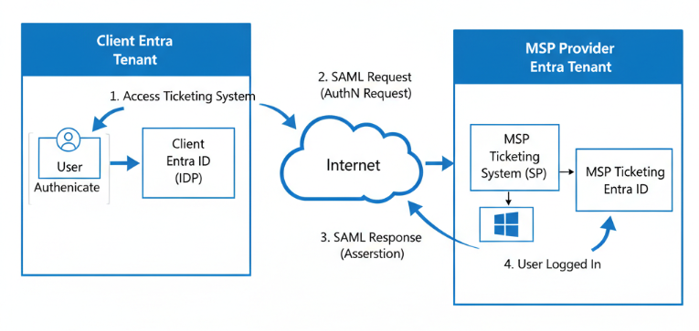
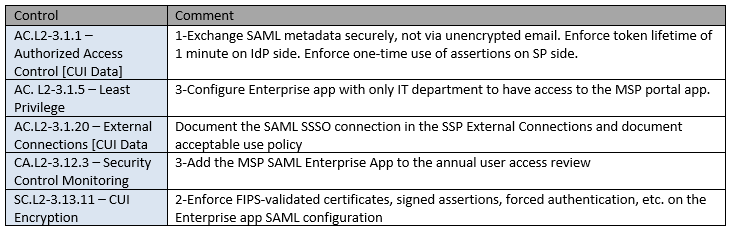

Assessing Risk in Entra Single Sign-on using SAML
A brief exercise to assess the risks of creating an Enterprise App in your Entra tenant to enable SAML-based single sign-on to access your Security MSP's portal.
Scenario
You have a new MSP who will be providing various security services to your organization like log management, EDR management, and vulnerability management. The MSP has a ticketing portal where you will submit tickets for support when needed, and they are helping you to configure access to the portal. The portal will be accessed using your normal company login and password, by enabling SAML-based single sign-on between your Microsoft Entra tenant and the MSP’s Entra tenant.
This risk assessment evaluates the security posture of the SAML Single Sign-On (SSO) implementation using Microsoft Entra (Azure AD) Enterprise Application as the Identity Provider (IdP) for access to the MSP portal. SAML SSO facilitates seamless and secure authentication by federating identity between the client organization and the MSP, enabling users to leverage existing credentials without maintaining multiple passwords.
Solution Architecture
A simple diagram helps visualize the basic components. (thanks ChatGPT!)
Assumptions
- The MSP portal will host a ticketing system containing sensitive security data about the client environment, including incident reports, vulnerability details, and configuration information.
- The ticketing system will be accessible only through the SAML SSO integration using Microsoft Entra Enterprise App as the Identity Provider.
- Multi-factor authentication will be enabled on the IdP to enhance user verification.
Risk Analysis
A simple risk analysis is conducted. It's helpful to provide links here to sources to make it easy on the Change Control Board reviewing and approving the connection. Here's a few I found helpful:Risk Mitigation
After analyzing the risks, and assigning scores that makes sense, various mitigations are provided to help minimize the risks identified. Here, the mitigations are mapped to CMMC controls, since the client in this scenario contracts with the federal government, and appreciates the added insight into how these align to the frameworks they rely on. The mitigations are also numbered where appropriate to easily map back to the risk identified in the previous section. Conclusion
This risk assessment has examined the security implications of implementing SAML-based Single Sign-On using Microsoft Entra Enterprise Application for access to the MSP portal. The analysis highlights that while there are inherent risks—such as assertion replay attacks, unauthorized access, and data interception—these can be effectively mitigated through best practices including strict SAML configuration, use of multi-factor authentication, secure certificate management, and least privilege access control.
By adhering to these measures, the client organization can maintain a strong security posture, confidently leveraging SSO to facilitate seamless, secure access without compromising sensitive security data hosted in the MSP portal. Continuous monitoring and periodic reassessment will further ensure evolving threats are managed proactively.